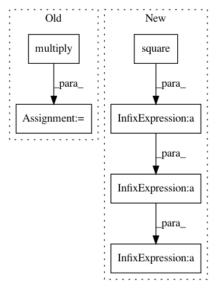

b7b1bd5c6f7892061a9915cd27d19360482d1fd8,lib/model/losses.py,,gmsd_loss,#Any#Any#,556
Before Change
true_edge_mag = scharr_edges(y_true, True)
pred_edge_mag = scharr_edges(y_pred, True)
cnst = 0.002
upper = 2.0 * tf.multiply(true_edge_mag, pred_edge_mag) + cnst
lower = tf.square(true_edge_mag) + tf.square(pred_edge_mag) + cnst
gms = tf.div(upper, lower)
_mean, _var = tf.nn.moments(gms, axes=[1, 2], keep_dims=True)
// single metric value per image in tensor [?, 1, 1]
gmsd = tf.reduce_mean(tf.sqrt(_var), axis=-1)
// need to expand to [?, height, width] dimensions for Keras ... modify to not be hard-coded
return K.tile(gmsd, [1, 64, 64])
After Change
pred_edge = scharr_edges(y_pred, True)
ephsilon = 0.0025
upper = 2.0 * true_edge * pred_edge
lower = K.square(true_edge) + K.square(pred_edge)
gms = (upper + ephsilon) / (lower + ephsilon)
gmsd = K.std(gms, axis=(1, 2, 3), keepdims=True)
gmsd = K.squeeze(gmsd, axis=-1)
return gmsd
In pattern: SUPERPATTERN
Frequency: 3
Non-data size: 6
Instances
Project Name: deepfakes/faceswap
Commit Name: b7b1bd5c6f7892061a9915cd27d19360482d1fd8
Time: 2019-08-03
Author: vrooman.kyle@gmail.com
File Name: lib/model/losses.py
Class Name:
Method Name: gmsd_loss
Project Name: NifTK/NiftyNet
Commit Name: 7d9d506e77585e5600b45dc41da1a731a4b30722
Time: 2017-04-27
Author: z.eaton-rosen@ucl.ac.uk
File Name: nn/loss.py
Class Name:
Method Name: sensitivity_specificity_loss
Project Name: broadinstitute/keras-rcnn
Commit Name: c18fada581afec3f6febb981c6ff26522dab39d0
Time: 2017-08-17
Author: allen.goodman@icloud.com
File Name: keras_rcnn/layers/losses/_rcnn.py
Class Name: RCNNRegressionLoss
Method Name: compute_loss